| 2 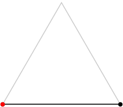 L = 2 | 3 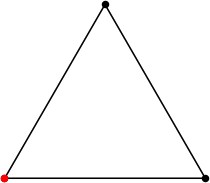 L = 3 | 4 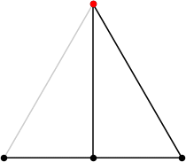 L = (5 + √3) / 2 = 3.366+ | 5 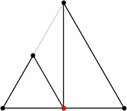 L = (6 + √3) / 2 = 3.866+ | 6 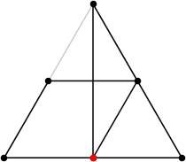 L = (7 + √3) / 2 = 4.366+ |
| 7 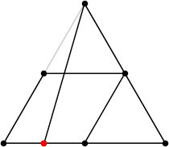 L = (15 + √13) / 4 = 4.651+ | 8 L = (15+√13+√6–√2)/4 = 4.910+ (Rob Pratt) | 9 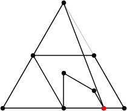 L = (22+√31+2√3)/6 = 5.171+ (Rob Pratt) | 10 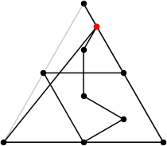 L = (22+√31+3√3)/6 = 5.460+ (Rob Pratt) | 11 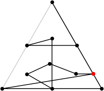 L = 5.680+ (Rob Pratt) |
| 12 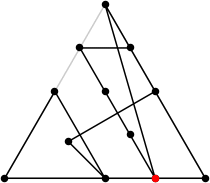 L = (19+√13+√6–√2)/4 = 5.910+ (Rob Pratt) | 13 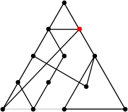 L = (20+√13+√6–√2)/4 = 6.160+ (Rob Pratt) | 14 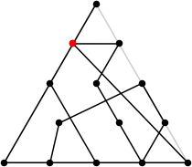 L = 6.373+ (Rob Pratt) | 15 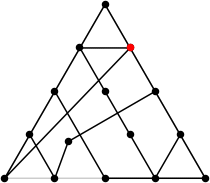 L = 6.596+ (Rob Pratt) | 16 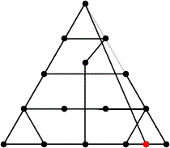 L = 6.763+ (Maurizio Morandi) |
| 17 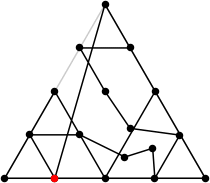 L = 6.917+ (Rob Pratt) | 18 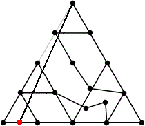 L = 7.084+ (Maurizio Morandi) | 19 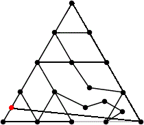 L = 7.225+ (Maurizio Morandi) | 20 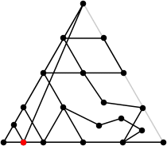 L = 7.350+ (Rob Pratt) | 21 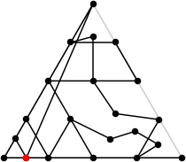 L = 7.480+ (Rob Pratt) |